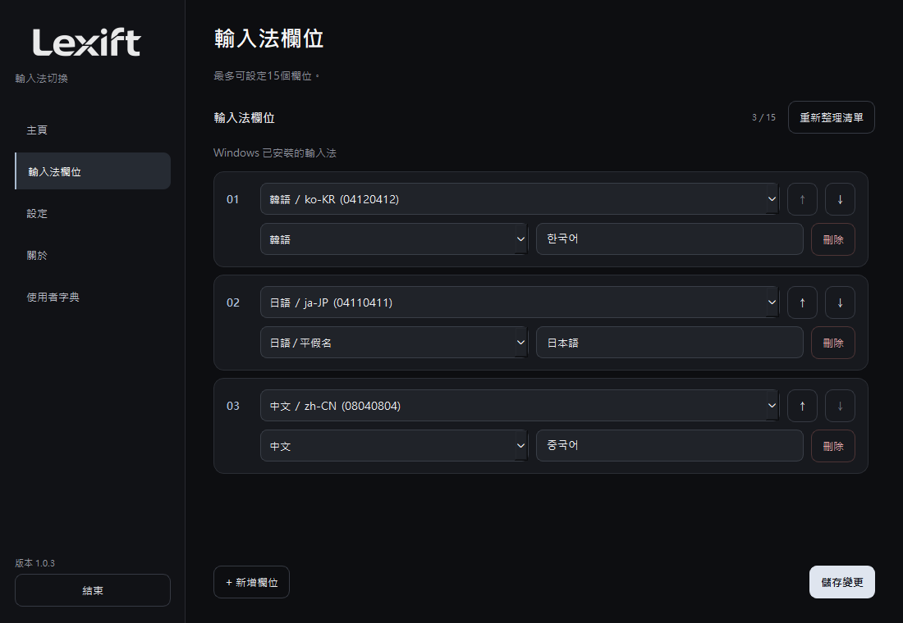
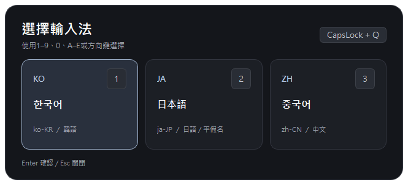
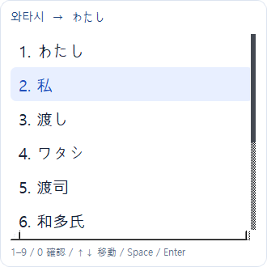
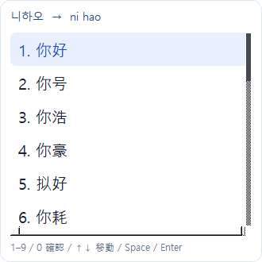
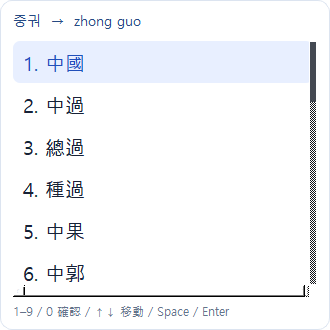
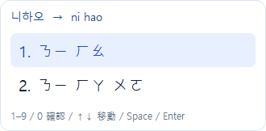
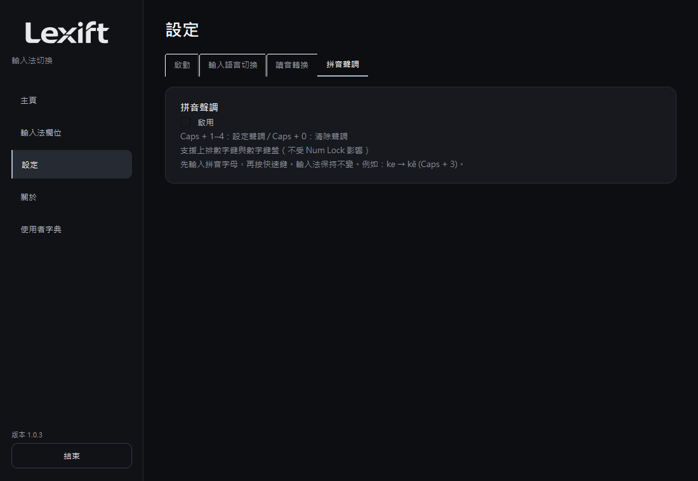
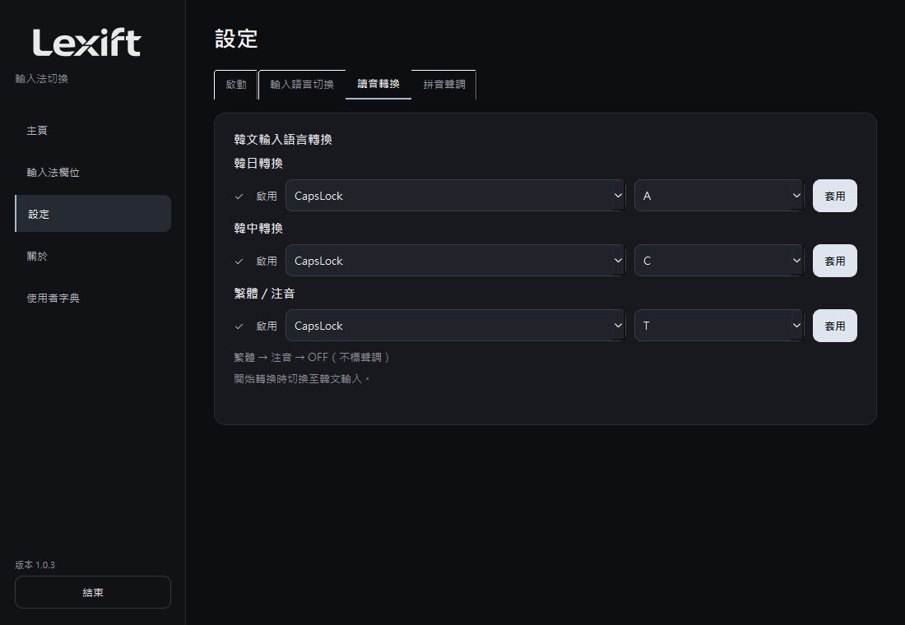
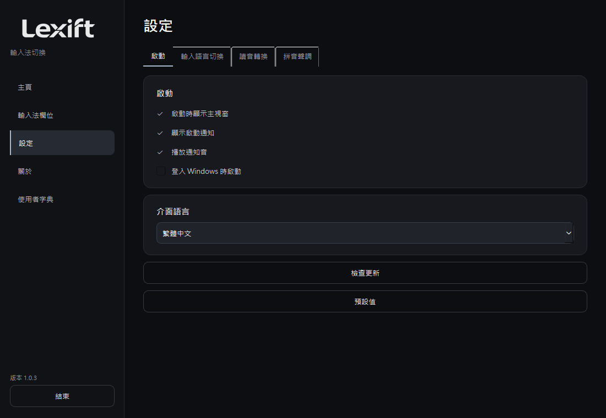
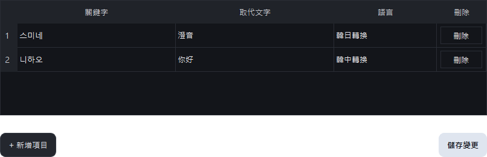

使用說明
概述
切換輸入法，以韓文字母輸入日文或中文。
Windows 10/11，64 位元。
下載 1.0.5 ↗安裝
解壓縮後執行 Lexift.exe。先在 Windows 新增所需輸入法，再到「輸入槽位」設定。

切換輸入法
方向鍵選取、Enter 確認，或直接按編號。

日文輸入
用韓文字母輸入日文讀音：와타시 → 私。再按一次關閉。

↑↓ 移動 / Space 或 Enter 確認 / 1–9、0 選取 / Esc 關閉。
啟用轉換時會切換到韓文輸入。
簡體中文
用韓文字母輸入中文讀音：니하오 → 你好。再按一次關閉。

繁體與注音
依序切換繁體 → 注音 → 關閉。중궈 → 中國 / 니하오 → ㄋㄧ ㄏㄠ。注音不標聲調。


拼音聲調
在設定中啟用「拼音聲調」，再輸入拼音字母。ke + Caps + 3 → kě。
1–4：設定聲調 / 0：清除聲調。數字鍵盤也可使用，不受 Num Lock 影響。候選視窗開啟時，數字鍵優先選取候選字。

設定
勾選要啟用的功能。修改快速鍵後按「套用」。快速鍵不能重複。


「預設值」會重設所有設定與自訂詞典。
自訂詞典
加入候選字中沒有的詞。填入關鍵字、取代文字與語言後儲存，例如：스미네 / 澄音 / 韓日轉換。按各列右側按鈕刪除。

疑難排解
以系統管理員身分執行時，更新會開啟下載頁面。請以一般權限執行，或將 ZIP 解壓縮到新資料夾。 記錄僅在一般權限執行時儲存。
快捷鍵沒有反應
確認系統匣中有 Lexift。在設定中啟用對應功能並按「套用」。若與其他程式的快捷鍵衝突，請更換按鍵。
切換清單中沒有所需語言
在 Windows 設定中安裝所需語言及輸入法，再加入 Lexift 的「輸入法欄位」。
輸入韓文後沒有候選詞
開啟轉換，並將韓語輸入法切至韓文模式。日文轉換需要 Microsoft 日文輸入法。新安裝輸入法後，重新啟動 Lexift。
日語轉換引擎反覆停止
將最新版 ZIP 完整解壓縮到新資料夾後執行。若仍有問題，在設定 → 程式資訊中開啟錯誤記錄，回報時附上結束代碼。
找不到所需詞語
姓名、專有名詞可加入使用者字典。日文長音可用連字號 (-) 輸入，例如：코-죠- → こうじょう。
Caps + Q 中方向鍵或 Esc 無效
結束 Lexift，將最新版 ZIP 完整解壓縮至新資料夾後執行。不要只複製主程式，module 資料夾也須保留。
拼音無法加上聲調
在設定中啟用「拼音聲調」。切至英文輸入，輸入 ke 後按 Caps + 3。先關閉候選視窗，並將游標放在要加聲調的音節後方。
只在某個程式中無法輸入
重新點選輸入框，並在記事本中比對測試。若目標程式以系統管理員身分執行，先結束 Lexift，再以系統管理員身分重新執行。不支援密碼等安全輸入框。
回報問題時請註明程式名稱、Windows 版本及重現步驟。
GitHub Issues ↗